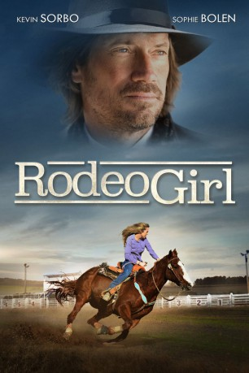

#11460 Rodeo Girl
 
 IMDB-Wertung: 5.8 / 10
IMDB-Wertung: 5.8 / 10  Metascore: 0
Metascore: 0 
Die vierzehnjährige Pferdenärrin Priscilla ist nicht gerade begeistert, als sie die Sommerferien auf der Ranch ihres Vaters verbringen soll, den sie kaum kennt, aber wenigstens darf sie ihr Pferd von zu Hause mitbringen. Im Mittelwesten steht man jedoch nicht sonderlich auf Dressurreiten, wie Priscilla es praktiziert, sondern beweist seine Künste lieber auf Rodeo-Veranstaltungen. Nach kurzem Zögern und mit Unterstützung eines charmanten Nachbarsjungen findet auch Priscilla Geschmack am wilden Treiben – sehr zur Beunruhigung ihres Vaters.
Jahr: 2016
Dauer: 108 Minuten
FSK: 0
Land: USA Studio: Umbrella EntertainmentTonspuren: - , - ,
Untertitel:
Auflösung: 1080p (1920x1080) Größe: 7536 MB
Genre: Abenteuer, Familie
Regisseur: Joel Paul Reisig
Drehbuch: Tricia Hopper, Aletha Rodgers
Soundtrack: Todd Maki
Darsteller:
 Kevin Sorbo als Duke Williams
Kevin Sorbo als Duke Williams- Derek Brandon als Sage
- Kylie Hart als Brooke Douglas
- Sophie Bolen als Priscilla
- Joel Paul Reisig als
- Elizabeth Labadie als Twin 2
- Carrie Bradstreet als Country Club patron
- Rose Anne Nepa als Audience Background
- Paityn Hart als Emma
- Joshua Ray Bell als Rodeo Announcer
- Tiffany Burns als House Mistress
- Jettzen Shea als Rodeo Fan
- Sherryl Despres als Laura Mae
- Lucas Miles als Rodeo Fan 1
- Jay J. Bidwell als Rodeo Fan 2
- Mark Boyd als Carl Davenport
- Janet Caine als Abigail
- Brett Alan Hart als Young Bull Rider
- Laura Henderson als Extra
- Don E. Willis als Extra (uncredited)
- Jacqueline Labadie als Twin 1
- Yassie Hawkes als Rodeo Fan
- Jonathan Posthuma als Rodeo Fan 3
- Sarah Shoffner als Swing Dancer / Rodeo Fan (Extra)
- Keith Seccombe als Mr. Halloway
- Steve Ostrander als Ranch Hand
- Cameron Brosky als Youth Background
- Louis Prince als Rodeo Fan 4
- Courtney Hart als Kelly
- Kaleigh Aldridge als Savannah
- Katie Hessler als Extra (uncredited)
- Dominic Joseph Nepa als Audience participant (uncredited)
Datei: X:\2016(N-Z)\Rodeo Girl (2016, FSK0, 1920x1080).mkv seit 09.07.2019
Festplatte: HD 2016(A-Z)
 Es gibt insgesamt 182 Filme in der Gruppe '2016(N-Z)'
Es gibt insgesamt 182 Filme in der Gruppe '2016(N-Z)'